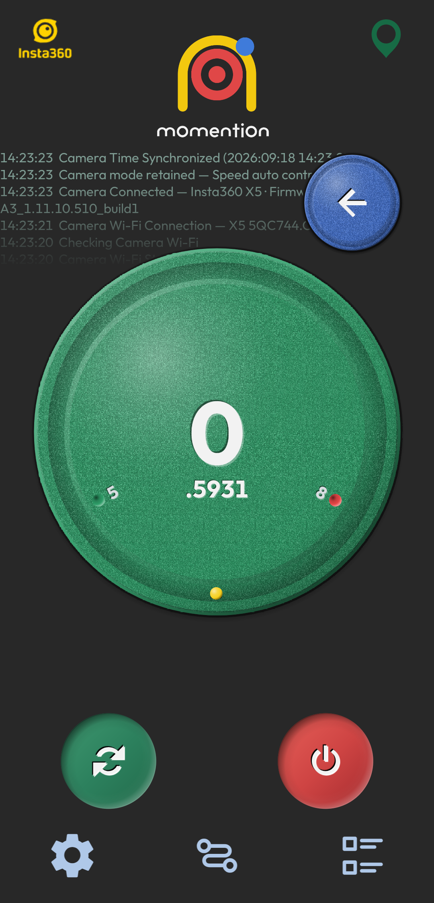

Speed-Triggered Recording
Set start and stop speeds. Your action camera follows your ride.
Set start and stop speeds. Your action camera follows your ride.
Remember your camera settings and reconnect after interruptions.
Keep your route and speed together for a closer look after riding.
Follow the map and explore how your speed changes along the route.
Replay multiple routes and compare speed, time, and elevation.
Create summary images and portrait heatmap-and-graph videos.
Real route summaries and replay videos from mOmentiOn.

Your route, speed, elevation, and ride summary in one view.
Replay the route and follow the graph as the ride unfolds.
Replay multiple rides together to see where they differ.



The selected camera logo is displayed. Tap while connecting to switch brands.
Shows GPS reception. Tap to turn speed monitoring on or off while keeping the camera connected.
Connection and recording events are logged in English, newest first.
Use the floating button to control the app.
Green indicates the camera is connected and ready to record; red indicates recording in progress. Manual recording is also supported.
The number beside the red dot is the configured recording start speed; the number beside the green dot is the configured recording stop speed.
The yellow dot follows the phone’s gravity direction.
Start or retry a connection. Tap again while a connection task is in progress to cancel.
Stops all services and exits the app immediately.
Configure camera connections, recording thresholds, and app behavior.
Review, compare, and share saved rides.
Open saved logs to inspect past activity.
GET mOmentiOn
Android is available through Google Play closed testing. Use the Google account registered for the test.
Android 10+ · Tester access required. Camera compatibility depends on model and firmware.
iOS: TestFlight build details are in the release notes. No public invitation link is listed yet.